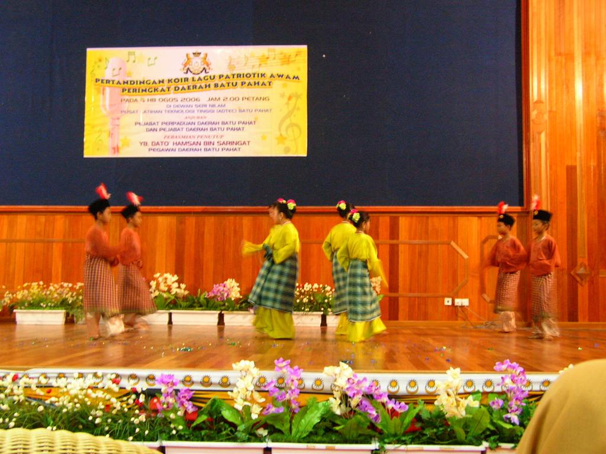

REKAMAN VISUAL
Galeri Warisan Budaya
KULINER WARISAN
Rendang Melayu
BUSANA ADAT
Baju Kurung Klasik

SENI TARI
Zapin Tradisional

TRADISI ADAT
Tepuk Tepung Tawar
KULINER WARISAN
Mie Sagu Selatpanjang
BUSANA ADAT